about us
-
 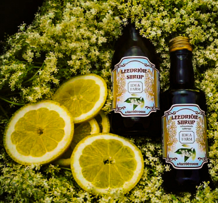
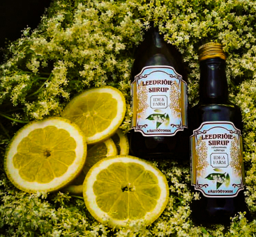The history of deafarm goes back almost 10 years, when the first products were elderflower and eel wax syrups, later irongrass syrup and apple vinegar were added. Today, the production volumes of the last two are several tons per year. To date, Ideafarm has more than 100 different farm products in its assortment, starting with various syrups, vinegars, drink bases, jams and chocolates.
-
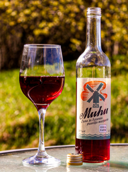
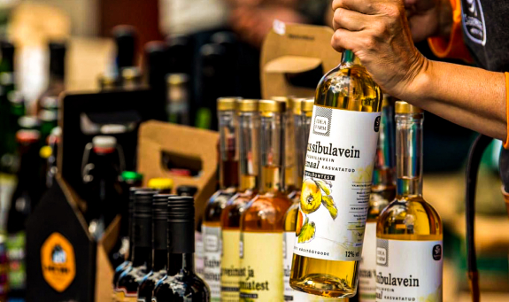
At Christmas 2019, we created the Saaremaa I winery, where we started producing fruit and berry wines, the first of which was Muhu apple and chokeberry wine. At the moment, our Saaremaa I winery has a total of 24 fruit and berry wines, and the selection is constantly increasing.
-
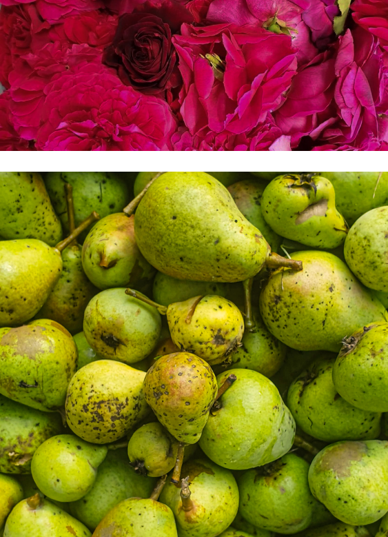
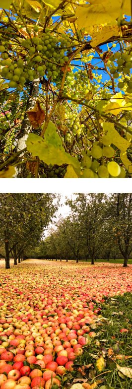
We collect most of the raw materials from our farm's 13ha of land ourselves together with family members and friends. The farm also has several hundred apple trees, over 50 varieties of fruit, many rose bushes, from which we make various jams, jellies, vinegars and syrups. In addition, we also buy apples from the surrounding farms, thanks to which the large apple orchards in the neighborhood have been preserved. We also started growing grapes, so it will soon be possible to get real grape wine from Saaremaa on store shelves. We manufacture our products in a factory in Orissa, where our factory store is also located.
-
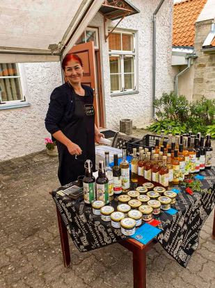 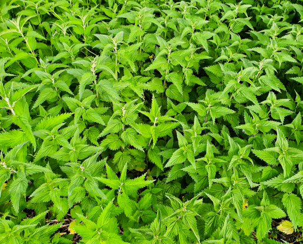
The founder of Ideafarm, Maria's knowledge of wines and herbal preserves dates back to her childhood, when her grandmother taught her to know and pick herbs. He has also passed this knowledge on to his children, for example, if someone was in pain somewhere, he did not rush to the store or pharmacy, but sought help from nature.
-
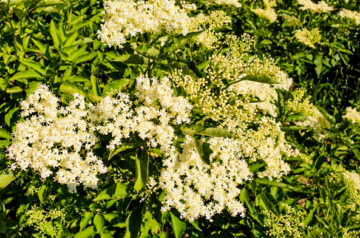
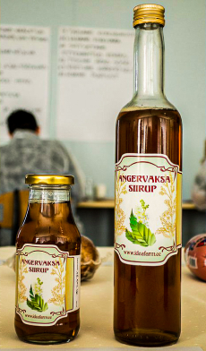
Thanks to the cocktail created by the representative of Estonia, who won second place at the "19 th annual Calvados Nouvelle Vogue International Trophies" cocktail competition held in Deauville, France, which also contained our eel wax syrup, Ideafarm products are now appreciated all over Europe.
-
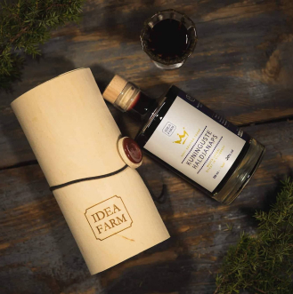 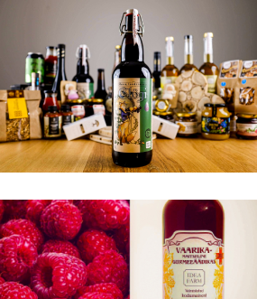
Some of our products have also won awards. The first award came in the spring of 2015, when Vaarika vinegar won the highest award for the best small producer at the competition of the Estonian Food Industry Association. The most recent awards are from the Estonian Sommelier Association: in 2020, our liqueur Haldjanaps made from black elder flowers and berries and glögi made from organic apples and elder berries won a silver medal. In 2021, our non-alcoholic Haldjanaps won the silver medal instead.
In addition to plant wisdom, Maria also has the title of the best female entrepreneur in 2015, she has studied psychology, has a master's degree in social science and is also a nutritionist. You can read Maria's blog here.
Põripöllu village, Saaremaa parish, Kalda farm. 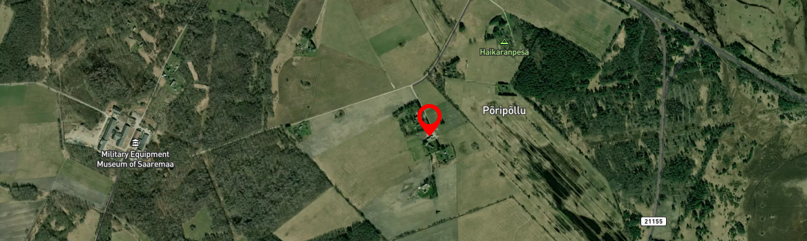